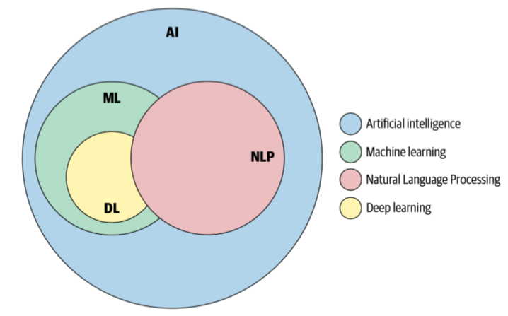
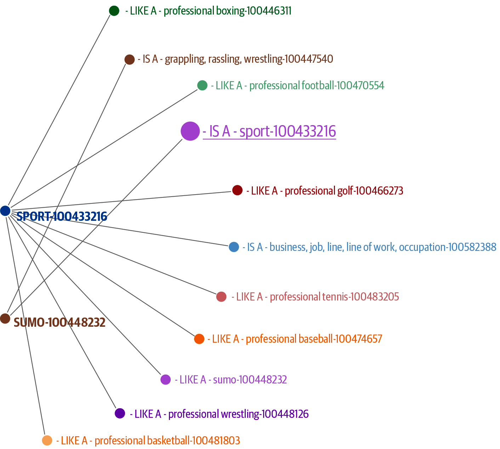
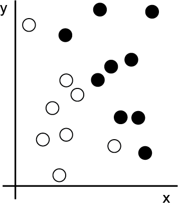
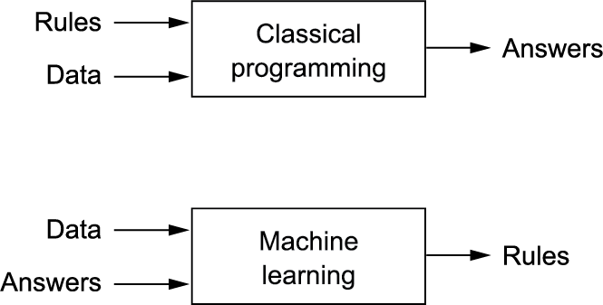
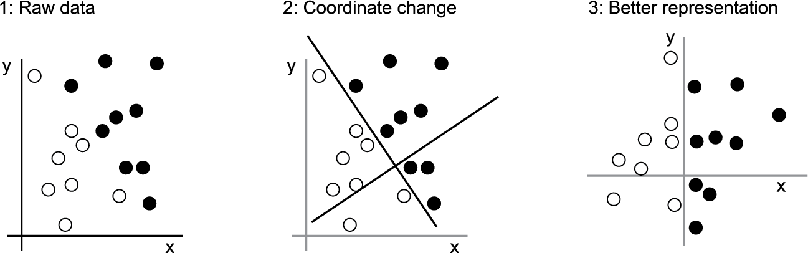
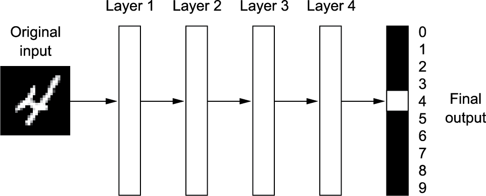
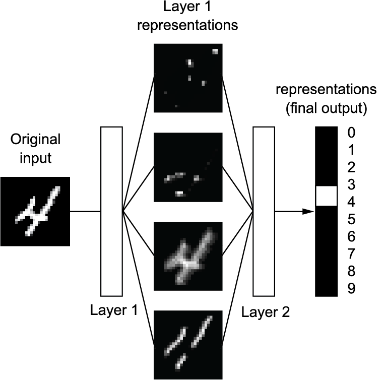

1.2 Machine Learning, Deep Learning, and NLP
Rules, then learning from examples, then stacked representations.
These notes walk through the lecture slides. The original deck is unchanged; use (slides) on the course hub if you want that PDF.
1. AI is bigger than learning
Artificial intelligence (AI) asks whether a computer can do work that looks like thinking. Not every AI system learns.
Early chess programs followed rules a person wrote. That is symbolic AI: store knowledge, write rules, apply the rules. Expert systems in the 1980s were the high-water mark of that idea.
Early NLP was the same shape. People wrote patterns for names, dates, or grammar. The program did not look at examples and invent the rules.

2. Heuristics-based NLP
A heuristic is a rule you believe is good enough. "If the word is capitalized and not at the start of the sentence, treat it as a name" is a heuristic.
WordNet is a hand-built database of English words and how they relate: synonyms, hyponyms (a dog is a kind of canine), meronyms (a wheel is part of a car). It is useful, and it does not learn from your corpus.

Rules fail when the language moves, when the domain is new, or when two rules disagree. That is why the field shifted toward machine learning.
3. Machine learning turns the recipe around
The usual program: a person writes rules that turn input into output.
Machine learning: you show input, the output you wanted, and a score that says how far off the current answer is. The machine searches for rules (or weights) that improve that score. It is trained, not fully programmed.
Three things you always need:
- input examples (reviews, emails, spectrograms)
- the expected output (a label, a transcript, a tag)
- a measure of error, used as feedback
The hard part is learning a representation: a transformation of the raw input that makes the task easy. The same photograph can be RGB or hue-saturation-value. Those are two representations. A good one lets a simple rule finish the job.

In that picture, after the right change of coordinates the rule is "black if (x > 0)." Learning is an automatic search for transformations like that, inside a hypothesis space you chose in advance.


4. Machine learning for NLP
Supervised methods are the workhorses:
- Classification: news topic, spam vs ham, sentiment.
- Regression: a number, for example a polarity score or a predicted price given the text around a stock.
Unsupervised clustering groups documents that look alike when you do not have labels.
The representation for text used to be counts (bag of words, TF–IDF). Later weeks build those, then replace them with embeddings.
5. Deep learning is stacked representations
Deep learning is still machine learning. The extra idea is layers. Each layer transforms the last one. The number of layers is the depth.
Those layers are a neural network. The name comes from biology. The models are not models of the brain.
Think of a stack of filters. Raw input goes in. Each stage keeps what helps the task and drops what does not.


Language is unstructured. That is why NLP adopted networks that can hold sequence and context: recurrent nets, convolutional nets, transformers, and autoencoders. You will meet them later. This week you only need the picture: rules, then shallow learners, then deep stacks.
Figures and the representation story follow Chollet, Deep Learning with Python (2nd ed.), and Practical Natural Language Processing.
6. Practice
-
Is a regular-expression date extractor machine learning? Why or why not?
-
For spam classification, name the three things from section 3.
-
In one sentence, what does "deep" mean in deep learning?